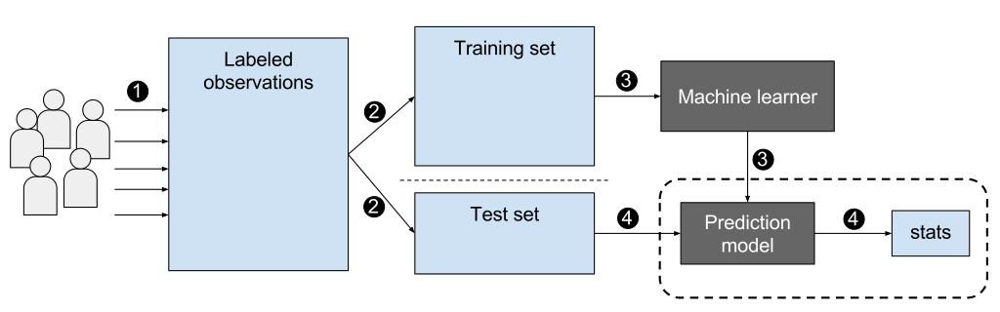

Machine Learning And Deep Learning For Data Analysis¶
Machine Learning¶
Machine learning is a powerful approach to developing intelligent systems that has seen significant growth in recent years. It is an interdisciplinary field that combines principles from computer science, statistics, mathematics, and other areas to create algorithms and models that can learn and make predictions from data. Machine learning is often used in applications where traditional rule-based programming is impractical or impossible, such as detecting fraud in financial transactions, recommending products to customers, and diagnosing medical conditions.
Evolution¶
The field of artificial intelligence has evolved significantly over the years, from rule-based systems that relied on expert knowledge to more modern data-driven approaches that use machine learning and data mining. Rule-based systems were based on a set of explicit rules and knowledge provided by human experts. These rules were used to make decisions and perform tasks, but their effectiveness was limited by the ability of experts to capture all the necessary knowledge and encode it in a set of rules.
In contrast, data-driven systems leverage the power of machine learning algorithms to automatically extract patterns and knowledge from large datasets. Data mining techniques are used to identify patterns and relationships in the data, which can be used to make predictions and decisions. The advantage of data-driven approaches is that they can capture complex patterns and relationships that may be difficult or impossible for humans to identify.
As the volume and complexity of data continue to increase, data-driven approaches are becoming more essential in many fields. Machine learning algorithms can be used to analyze and make predictions in areas such as finance, healthcare, and transportation. While rule-based systems are still used in some areas, data-driven approaches have become increasingly popular due to their ability to extract knowledge from large and complex datasets. Overall, the shift from rule-based to data-driven systems represents a significant evolution in the field of artificial intelligence and has opened up many new opportunities for intelligent systems to solve complex problems.

Types of learning tasks¶
Supervised Learning:
Supervised learning is a type of learning task that involves the use of labeled data, where the algorithm is trained using inputs and corresponding outputs. It can be further divided into two categories:
Classification: Classification is a type of supervised learning where the algorithm learns to predict a discrete output. For example, predicting whether an email is spam or not.
Regression: Regression is a type of supervised learning where the algorithm learns to predict a continuous output. For example, predicting the price of a house.
Unsupervised Learning:
Unsupervised learning is a type of learning task that involves the use of unlabeled data. In this type of learning, the algorithm learns patterns and relationships within the data without any specific guidance or target output. It can be further divided into two categories:
Clustering: Clustering is a type of unsupervised learning where the algorithm groups similar data points together. For example, grouping customers based on their purchase history.
Dimension reduction: Dimension reduction is a type of unsupervised learning where the algorithm reduces the number of variables in the data while preserving its underlying structure. For example, reducing the number of variables in an image while preserving its visual features. It can also be employed to visualize data in 2D and 3D plots.
Reinforcement Learning:
Reinforcement learning is a type of learning task where an agent learns to interact with an environment to achieve a specific goal. The agent receives rewards or punishments based on its actions and learns to make optimal decisions to maximize the cumulative reward.
Semi-Supervised Learning:
Semi-supervised learning is a type of learning task that involves the use of both labeled and unlabeled data. In this type of learning, the algorithm learns from the labeled data and uses the unlabeled data to improve its performance.
Self-Supervised Learning:
Self-supervised learning is a type of learning task that involves the use of labeled data generated by the algorithm itself. In this type of learning, the algorithm creates a task based on the input data, and the output is used as the label for the same input data. For example, predicting the missing pixels in an image.
Self-Supervised learning is extensively used in deep learning training.
Ensemble Learning
These models combine multiple machine learning models to improve performance. Examples of ensemble learning models include bagging, boosting, and stacking.
Transfer learning
Transfer learning is a machine learning technique where knowledge gained from training a model on one task is leveraged to improve the performance on a new, related task. Rather than starting the learning process from scratch, transfer learning enables the reuse of pre-trained models, which can save time and computational resources while also improving the accuracy of the new model. The pre-trained model’s learned features and representations can be fine-tuned on the new data or used to extract useful features that are then fed into a new model. Transfer learning has been widely used in many domains, such as computer vision, natural language processing, and speech recognition, and has proven to be an effective way to tackle many real-world problems with limited labeled data.
A typical workflow for supervised learning¶
Credit: EpochFail, CC BY-SA 4.0 <https://creativecommons.org/licenses/by-sa/4.0>, via Wikimedia Commons
Traditional Machine Learning Models¶
Supervised learning
Linear Regression
Logistic Regression
Support Vector Machine
Unsupervised learning
K-means clustering
Principal Component Analysis (PCA)
Reinforcement learning
Q-learning

This informatics map only shows supervised and unsupervised models
Credit: https://scikit-learn.org/stable/tutorial/machine_learning_map/index.html
Libraries and frameworks¶
Scikit learning
R-studio
Spark MLLib
Matplotlib, Seaborn, Plotly, Bokeh for visualization
Note
Extended reading:
Brownlee, Jason, PhD, “A Tour of Machine Learning Algorithms”, Machine Learning Mastery, 2020, https://machinelearningmastery.com/a-tour-of-machine-learning-algorithms/
Deep Learning¶
Deep learning models are a subset of machine learning algorithm that are based on artificial neural networks with multiple layers. These models have gained popularity in recent years due to their ability to automatically learn representations of data and extract features from high-dimensional inputs such as images, audio, and text.
Characteristics of deep learning models¶
Ability to learn complex representations: Deep learning models are able to learn complex representations of data by stacking multiple layers of neurons on top of each other. This enables them to extract high-level features from raw input data.
Automatic feature extraction: Deep learning models can automatically extract features from raw data, which eliminates the need for manual feature engineering.
Large amounts of data: Deep learning models require large amounts of data to train effectively due to their large number of parameters.
Computationally intensive: Deep learning models require significant computational resources, including powerful hardware and efficient algorithms, to train and run.
Compare to traditional machine learning models¶
Data representation: Traditional machine learning models typically rely on handcrafted feature engineering to extract relevant information from raw data. In contrast, deep learning models can automatically learn representations of data and extract features from high-dimensional inputs.
Complexity: Traditional machine learning models are typically based on simple models such as linear regression or decision trees, which are not well-suited for handling complex data. Deep learning models, on the other hand, are based on neural networks with multiple layers, which are capable of learning complex representations of data.
Performance: Deep learning models have achieved state-of-the-art performance on various tasks, such as image recognition and natural language processing, and have surpassed traditional machine learning models in many cases.
Data requirements: Deep learning models typically require large amounts of labeled data to train effectively, whereas traditional machine learning models can often work with smaller datasets.

Extended reading: Asher, Clint, et al. “The Role of AI in Characterizing the DCM Phenotype.” Frontiers in Cardiovascular Medicine 8 (2021): 1986.
Deep learning models¶
Deep learning models are more complex than traditional machine learning models. Thus, the categorization of deep learning models is more complex than that of traditional machine learning models. Deep learning models can be categorized based on the type of learning task, the type of neural network architecture, and the type of learning algorithm. The following table lists some of the most popular deep learning models.
Supervised learning
Convolutional Neural Network (CNN)
Recurrent Neural Network (RNN)
Generative Adversarial Network (GAN)
Unsupervised learning
Autoencoder
Diffusion models
Generative Adversarial Network (GAN)
Reinforcement learning
Deep Q-Network (DQN)
They can also be categorized by the data they are designed to process:
Computer vision
Convolutional Neural Network (CNN)
Recurrent Neural Network (RNN)
Generative Adversarial Network (GAN)
Diffusion models
Natural language processing
Transformer models
Matrix Factorization
Recurrent Neural Network (RNN)
Time-series data
Example: sound, speech, video, stock market data, etc.
Recurrent Neural Network (RNN)
Convolutional Neural Network (CNN)

Extended reading: https://www.asimovinstitute.org/neural-network-zoo/
Trending Deep Learning Models¶
The field of AI models has seen explosive growth since the publication of ChatGPT in 2022. With big companies and organizations now investing in this technology, it has become increasingly difficult for smaller institutions and individuals to train these models from scratch. As a result, many researchers and application developers are turning to pre-trained models from these organizations or using APIs provided by them. By employing techniques such as fine-tuning or few-shot learning, these developers can easily adapt pre-trained models to their specific tasks. This approach not only saves time and resources but also allows for the creation of highly accurate and sophisticated AI models that were previously out of reach for many smaller organizations and individuals.
Large language models (LLM)
GPT family from OpenAI: GPT-3, GPT-4, ChatGPT
Google BERT, LaMDA, PaLM, T5, Bard
Facebook RoBERTa, BigBird
BigScience BLOOM
Image generation models
Image generation models are a family of models that are capable of generating image from text (prompt), another image. They can also finish tasks like in-painting, out-painting, super-scaling, etc.
OpenAI DALL-E
Stable Diffusion
MidJourney (possibly related to stable diffusion)
Voice/Speech models
These models are capable of speech/music synthesis, speech recognition, tone changing, translation, script based sound editing, etc.
Google WaveNet, Universal Speech Model (USM)
OpenAI Whisper
DL Libraries and frameworks¶
TensorFlow: Developed by Google, TensorFlow is an open-source platform that allows developers to create and train ML models using a wide range of tools and APIs. TensorFlow supports various programming languages, including Python, Java, C++, and R, and provides a high-level Keras API for building and training deep neural networks.
PyTorch: Developed by Facebook, PyTorch is an open-source ML library for Python. PyTorch is popular among researchers and developers because of its dynamic computational graph, which allows for more flexibility and easier debugging. PyTorch also offers a variety of tools and modules for building and training deep learning models.
Theano: Theano is a Python library that allows developers to define, optimize, and evaluate mathematical expressions involving multi-dimensional arrays. Theano provides a high-level programming interface for building and training deep neural networks, and it can run on both CPUs and GPUs.
Caffe 2: Caffe 2 is a deep learning framework developed by Facebook that is optimized for mobile and computer vision applications. Caffe 2 provides a flexible architecture that allows for easy experimentation and customization, and it supports a wide range of neural network architectures.
Chainer: Chainer is a Python-based deep learning framework that was developed by Preferred Networks. Chainer is known for its flexibility, which allows developers to define and customize neural network architectures using a dynamic computational graph. Chainer also supports a variety of optimization algorithms and can run on both CPUs and GPUs.
Extended reading: https://analyticsdrift.com/top-deep-learning-libraries
Case Studies of Data Analysis for Big Data¶
Marr, Bernard; “Big Data Case Study Collection”, https://www.bernardmarr.com/img/bigdata-case-studybook_final.pdf
Oracle, “Top Big Data Analytics Use Cases”, https://www.oracle.com/a/ocom/docs/top-22-use-cases-for-big-data.pdf
Datamation.com, “How Big Data is Used by Netflix, AccuWeather, China Eastern Airlines, Etsy, and mLogica: Business Case Studies”, https://www.datamation.com/big-data/big-data-case-studies